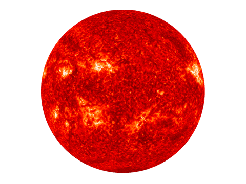
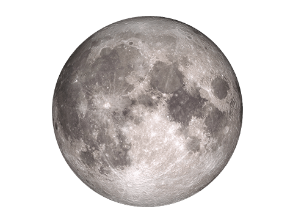

01
Tata Surya Bagian Dalam
Merkurius, Venus, Bumi, Mars
Dihuni planet kebumian berbatu yang berukuran relatif kecil, memiliki permukaan padat, sedikit satelit, dan tidak memiliki cincin.
Planet Explorer menghadirkan pengetahuan tentang Matahari, delapan planet, Bulan, misi antariksa, dan berbagai fenomena luar angkasa dengan bahasa yang sederhana, visual menarik, dan mudah dipahami tanpa membosankan.
Tata Surya adalah sistem antariksa yang terdiri atas Matahari sebagai pusatnya dan seluruh benda langit yang terikat oleh gaya gravitasinya. Sistem ini terbentuk sekitar 4,6 miliar tahun lalu dan terletak di Lengan Orion, Galaksi Bima Sakti.
Merkurius, Venus, Bumi, Mars
Dihuni planet kebumian berbatu yang berukuran relatif kecil, memiliki permukaan padat, sedikit satelit, dan tidak memiliki cincin.
Antara Orbit Mars & Jupiter
Wilayah berbentuk cincin berisi jutaan bongkahan batu dan logam sisa pembentukan awal Tata Surya, termasuk planet kerdil Ceres.
Jupiter, Saturnus, Uranus, Neptunus
Dikuasai planet raksasa gas dan raksasa es yang berukuran sangat besar, memiliki puluhan bulan, serta dikelilingi sistem cincin.
Batas Terluar Tata Surya
Wilayah beku di luar orbit Neptunus yang menjadi rumah bagi Pluto, planet kerdil lainnya, serta tempat asal komet-komet es.

Bola gas panas raksasa (hidrogen dan helium) di pusat Tata Surya yang menjadi sumber cahaya, panas, dan energi utama bagi kehidupan di Bumi.

Satu-satunya satelit alami Bumi yang memantulkan cahaya Matahari. Gravitasinya mengatur pasang surut air laut dan menjaga kestabilan iklim Bumi.
Pilih kategori atau klik tombol Detail Planet untuk melihat struktur, lama rotasi, revolusi, dan fakta unik tiap planet.
Selain 8 planet utama di Tata Surya, para astronom juga mengelompokkan planet kerdil serta ribuan planet di luar Tata Surya (eksoplanet).
Dulunya dikenal sebagai planet ke-9 hingga tahun 2006. Memiliki 5 bulan dan dataran es nitrogen berbentuk hati yang ikonik.
Satu-satunya planet kerdil di Tata Surya bagian dalam dan merupakan objek terbesar di Sabuk Asteroid antara Mars & Jupiter.
Berukuran hampir sama dengan Pluto namun lebih berat. Penemuannya pada 2005 memicu IAU memperbarui syarat definisi planet.
Memiliki bentuk lonjong menyerupai telur karena kecepatan rotasinya sangat cepat (satu hari di sana hanya sekitar 4 jam).
Planet kerdil paling terang kedua di Sabuk Kuiper setelah Pluto dengan permukaan es metana yang sangat dingin.
Pada tahun 2006, Persatuan Astronomi Internasional (IAU) menetapkan 3 syarat planet: (1) mengorbit Matahari, (2) berbentuk bulat, dan (3) membersihkan jalur orbitnya dari benda lain. Pluto memenuhi dua syarat pertama, tetapi orbitnya masih berbagi dengan banyak objek es di Sabuk Kuiper sehingga diklasifikasikan sebagai Planet Kerdil.
Eksoplanet berbatu yang massanya lebih besar daripada Bumi, namun lebih ringan daripada Neptunus. Beberapa di antaranya berada di zona laik huni bintangnya.
Planet raksasa gas seukuran Jupiter yang mengorbit sangat dekat dengan bintang induknya sehingga satu tahun di sana hanya berlangsung beberapa hari Bumi.
Planet yang terlempar dari sistem bintang asalnya dan melayang bebas sendirian mengarungi ruang gelap galaksi tanpa mengorbit bintang mana pun.
Terjadi saat Matahari, Bumi, dan Bulan berada pada satu garis lurus sehingga bayangan Bulan jatuh ke Bumi atau bayangan Bumi menutupi Bulan.
Peristiwa ketika puluhan batuan kecil luar angkasa (meteoroid) memasuki atmosfer Bumi dan terbakar membentuk kilatan "bintang jatuh".
Bola es dan debu yang mengorbit Matahari dalam lintasan lonjong. Saat mendekati Matahari, esnya menguap membentuk ekor cahaya panjang.
Miliaran partikel es dan batuan yang mengorbit ekuator Jupiter, Saturnus, Uranus, dan Neptunus akibat gaya gravitasi planet induknya.
Misi bersejarah yang mendaratkan manusia pertama di Bulan (Neil Armstrong & Buzz Aldrin) serta membawa pulang 21,5 kg sampel batuan bulan.
Wahana penjelajah planet raksasa luar yang kini menjadi objek buatan manusia terjauh di ruang antarbintang, membawa piringan emas Golden Record.
Robot penjelajah canggih di Kawah Jezero, Mars, yang mencari jejak kehidupan purba, memproduksi oksigen dari udara Mars, dan menerbangkan helikopter Ingenuity.
Teleskop inframerah bercermin emas 6,5 meter yang mampu melihat galaksi paling awal alam semesta dan meneliti atmosfer eksoplanet.
Tekanan ekstrem di atmosfer dalam Uranus dan Neptunus diperkirakan mengubah karbon menjadi hujan kristal berlian cair.
Jejak sepatu astronaut Apollo di permukaan Bulan dapat bertahan jutaan tahun karena tidak ada angin maupun air di sana.
Luar angkasa merupakan ruang hampa tanpa udara sebagai perantara suara, sehingga suasana di luar angkasa benar-benar sunyi.
Cahaya Matahari menempuh jarak 150 juta km selama sekitar 8 menit 20 detik untuk sampai ke mata kita di Bumi.
Skor akhir kamu pada kuis Planet Explorer adalah: